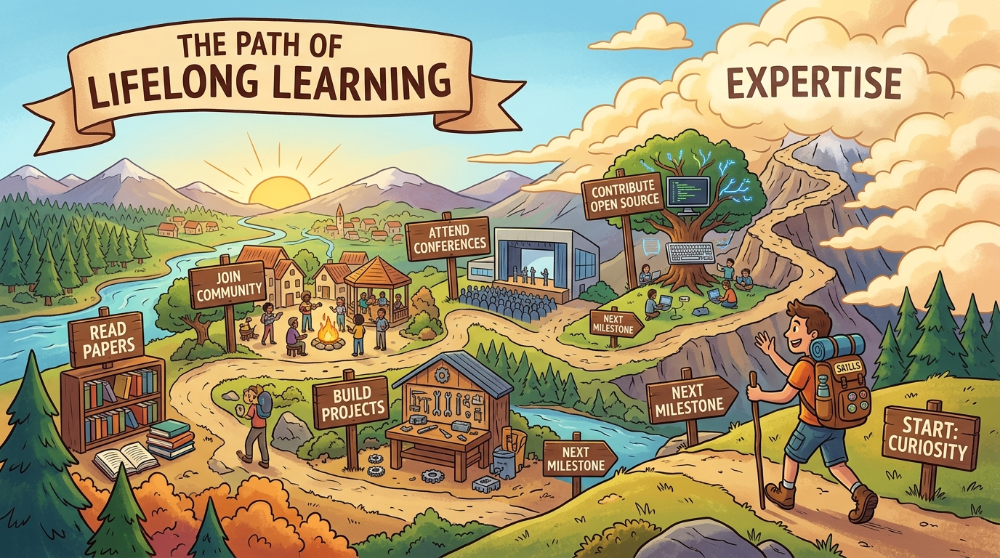

33.1 Course Design Philosophy
A great AI product course balances theory with hands-on practice, preparing students to build real products that users can trust.
Target Audience
This course serves two primary cohorts. Graduate students in MBA, MIDS, and MEng programs form the first cohort, typically with 2-5 years of professional experience and foundational technology literacy. Executive education participants form the second cohort, typically senior product managers, founders, and directors seeking to integrate AI capabilities into existing products or new ventures.
Both cohorts benefit from project-based learning, but differ in pace, prior experience, and depth of technical exploration. The course accommodates both through differentiated pathways and extension activities.
With these audiences in mind, the course establishes clear learning objectives that prepare students for real AI product challenges. Both cohorts leave with a portfolio of tangible artifacts: opportunity memos, PRDs, prototypes, and launch plans.
Learning Objectives
By the end of this course, students will be able to identify and prioritize AI product opportunities using evidence-based discovery methods. They will design AI-native user experiences that build and maintain user trust. Students will define requirements through eval-first thinking by creating testable success criteria before implementation. They will prototype and vibe code functional AI product concepts rapidly. Students will architect AI systems with appropriate retrieval, memory, and orchestration patterns. They will select and route between AI models based on capability, cost, and latency requirements. Students will build comprehensive eval suites and observability systems for AI products. They will establish governance frameworks addressing security, privacy, and responsible AI practices. Finally, students will launch AI products with appropriate metrics, monitoring, and post-launch learning loops.
The eight core competencies map to the product development lifecycle: discovery, design, prototyping, architecture, model selection, evaluation, governance, and launch.

Prerequisites
Students should arrive with basic familiarity with product management concepts such as user stories, PRDs, and roadmaps, a working knowledge of how modern software products are built and delivered, exposure to data-driven decision making, and comfort with reading and discussing technology trade-offs at a conceptual level.
No machine learning or programming background is required. The course deliberately avoids deep technical implementation of model training, focusing instead on product decisions around AI integration.
Assessment Philosophy
Assessment in this course mirrors real product work. Students demonstrate competence through building artifacts that product teams actually produce: opportunity memos, PRDs, prototypes, architecture documents, and launch plans. This approach evaluates applied skill rather than memorized knowledge.
The course uses criterion-referenced assessment where clear rubrics define what distinguishes excellent, proficient, and developing work. Peer review adds diverse perspectives and simulates the collaborative nature of product development.
Formative assessment appears throughout each week via reflection prompts and self-check exercises. Summative assessment occurs at natural project milestones. The capstone provides comprehensive evaluation of integrated competencies.
Formative: Weekly reflections, self-checks (ongoing)
Summative: Opportunity memo (15%), AI PRD (15%), Prototype (20%), Architecture doc (10%), Eval suite (10%), Governance plan (10%), Capstone (20%)
Pedagogical Approach
The course follows a scaffolded structure where each week builds on previous learning. Week 1 establishes why AI changes product thinking. Week 2 grounds students in AI capabilities and limitations. Weeks 3-4 move into strategy and UX. Weeks 5-6 cover requirements and prototyping. Weeks 7-9 address technical architecture, models, and evals. Weeks 10-12 complete the journey through governance, launch, and capstone.
Each week combines conceptual reading, applied discussion, and hands-on lab work. This tripartite structure ensures students understand principles, can articulate them in discussion, and can apply them in practice.
Think of the 12-week course as a product development lifecycle compressed: exploration (weeks 1-4), development (weeks 5-9), and launch (weeks 10-12). Students experience AI product development by living through it.
This pedagogical approach scales across multiple delivery formats, allowing institutions to adapt the material to their academic calendars and student needs.
Course Format Options
The material supports multiple delivery formats. A semester-long university course spanning 14 weeks provides full exploration with extended case studies and design studios. A quarter-length course of 12 weeks offers compressed coverage with streamlined case studies. An executive workshop conducted over 3 days provides an intensive overview covering core frameworks and one hands-on lab. A self-paced online course delivers modular content with automated feedback on knowledge checks.